Final pseudo-GT frame: 001415
Pearson correlation(progress, mIoU): 0.939
Plot: evaluation_metrics.svg · Data: evaluation_progress.csv
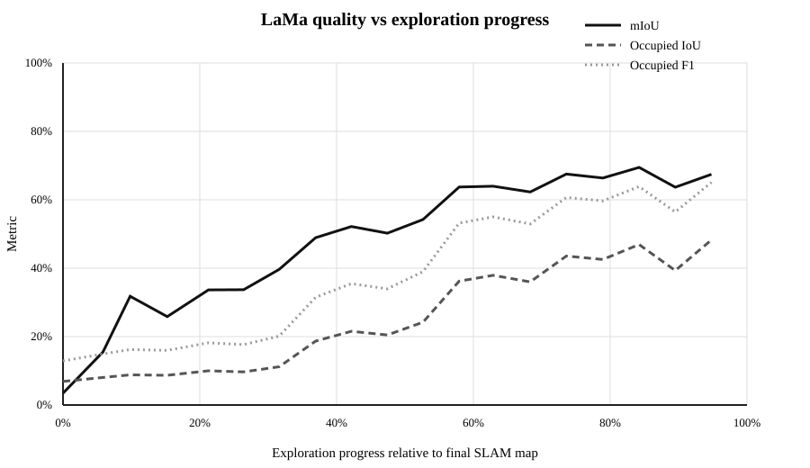
known=2.6% · mIoU=25.9% · occupied IoU=8.7% · occupied F1=16.0%
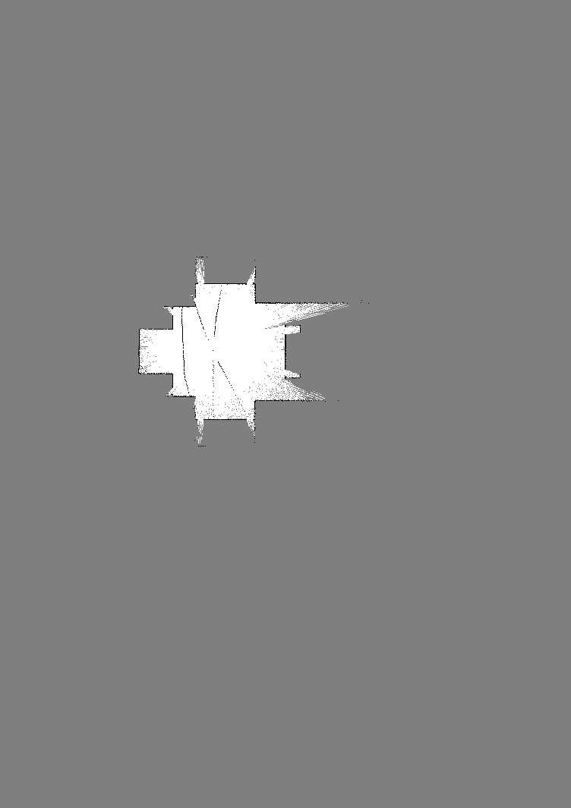
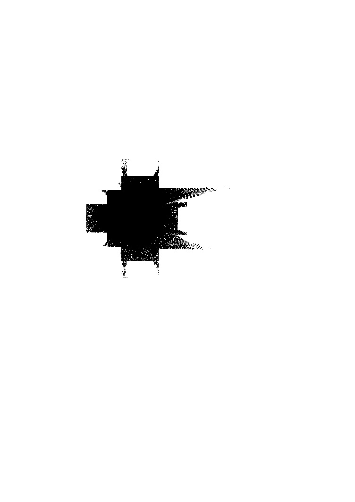
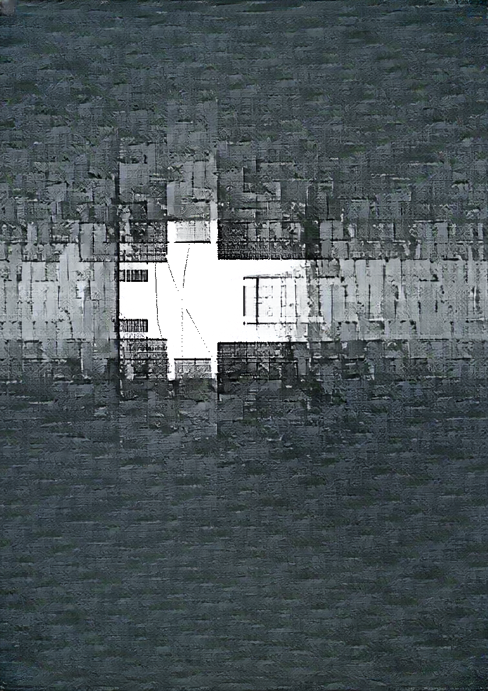
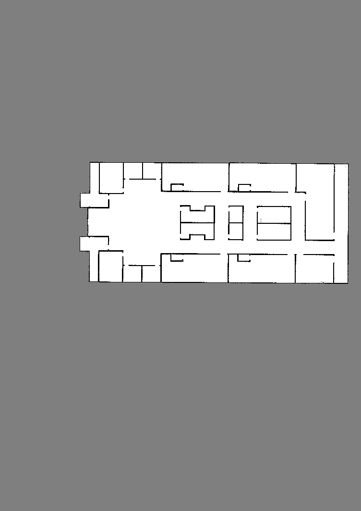
known=7.2% · mIoU=52.2% · occupied IoU=21.6% · occupied F1=35.5%
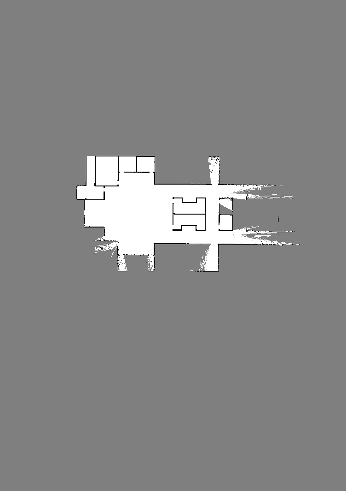
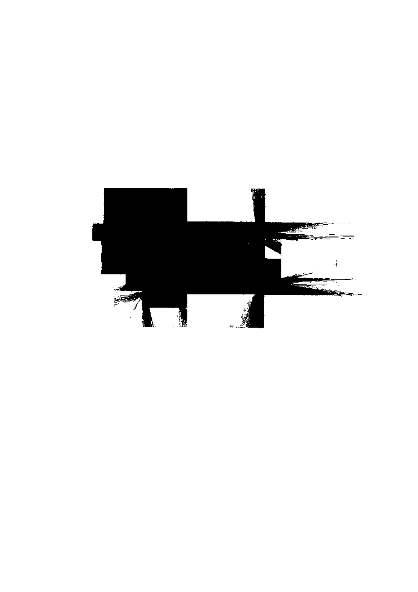
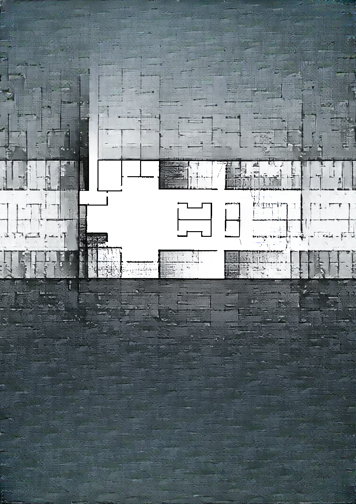
known=9.8% · mIoU=63.7% · occupied IoU=36.2% · occupied F1=53.2%
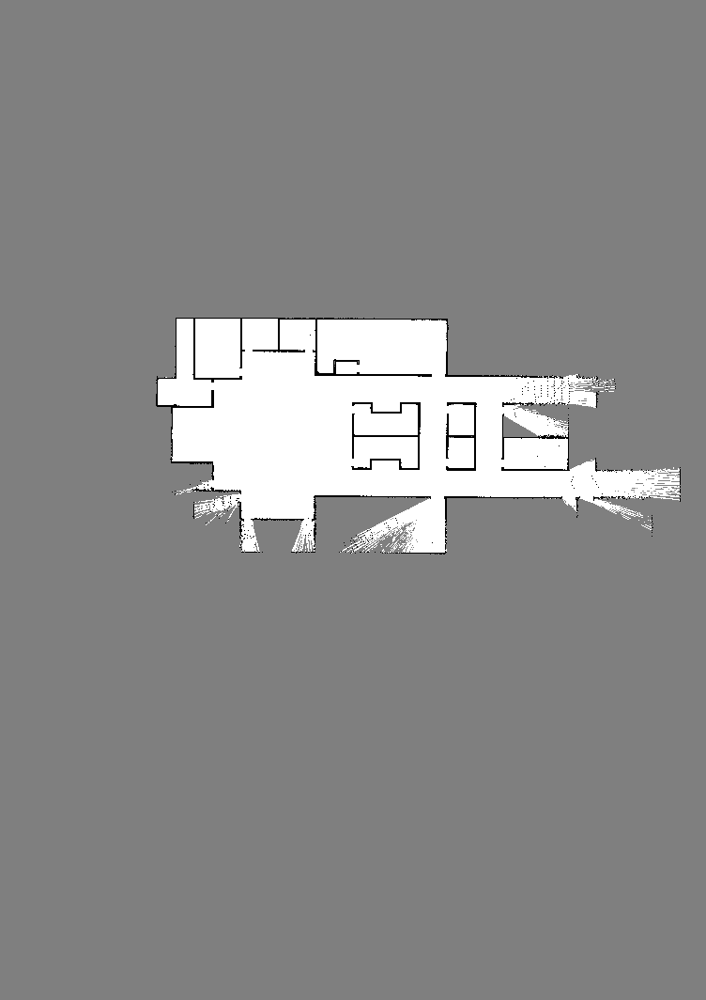
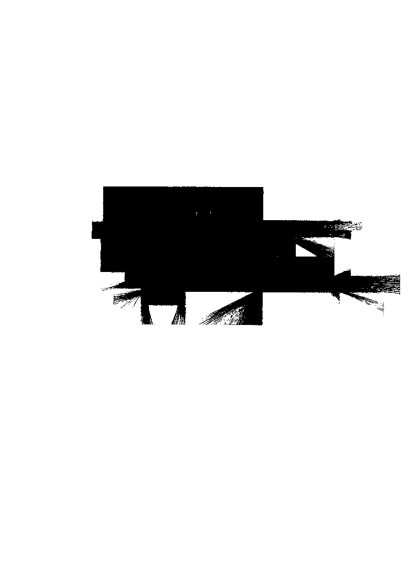
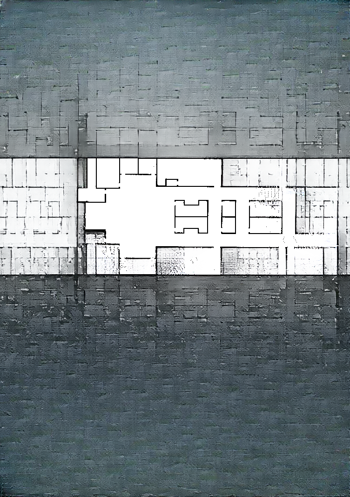
known=14.3% · mIoU=69.5% · occupied IoU=46.9% · occupied F1=63.9%
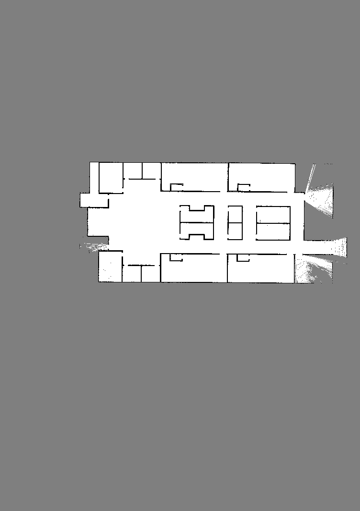
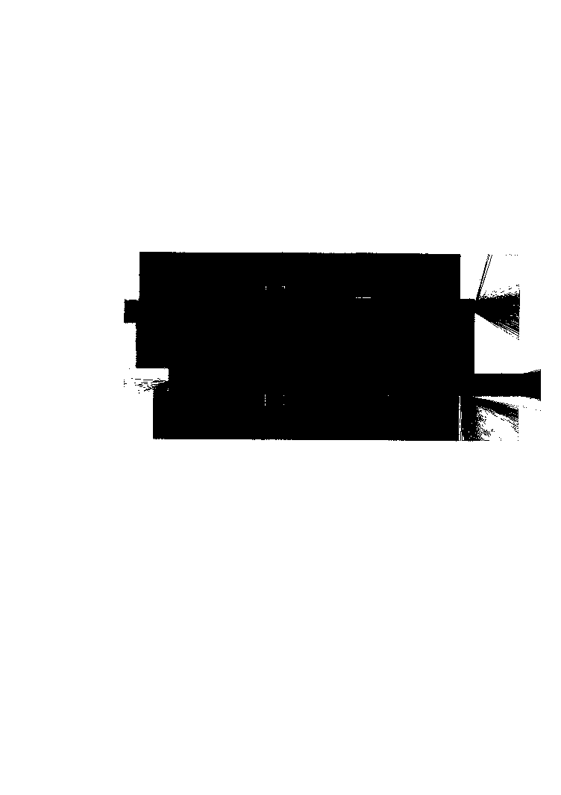
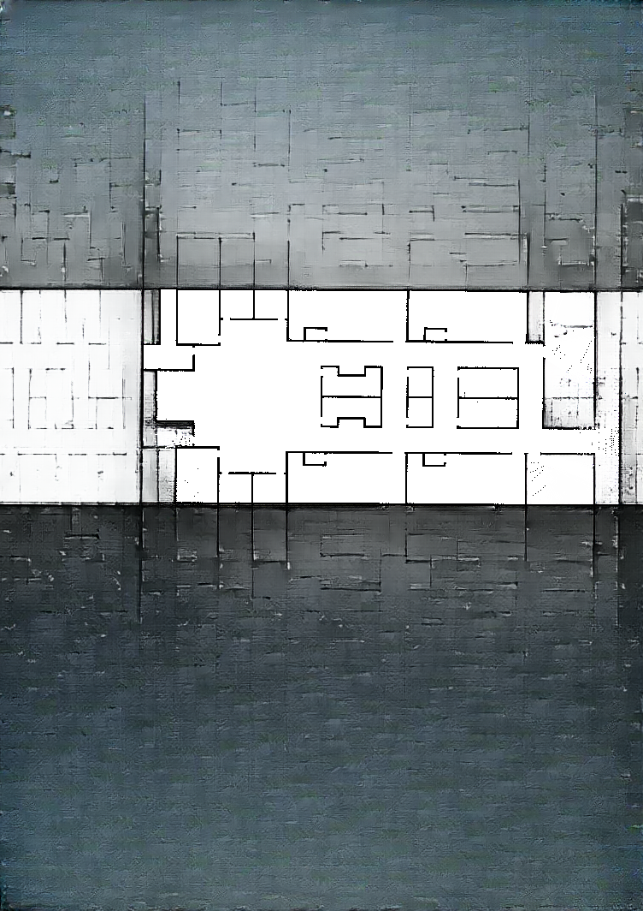